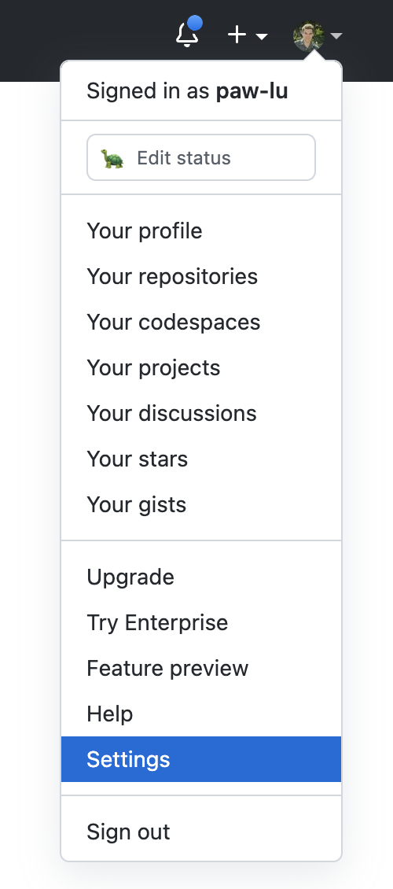
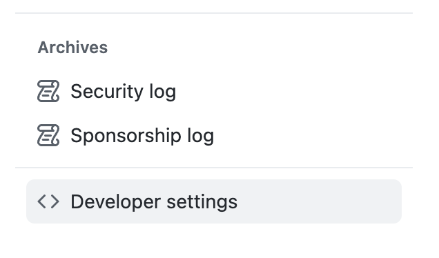
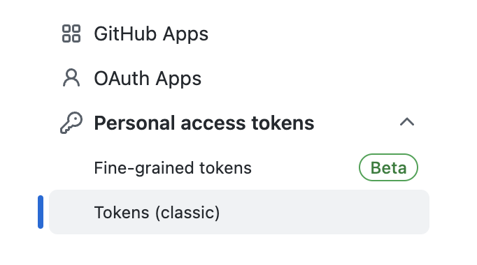
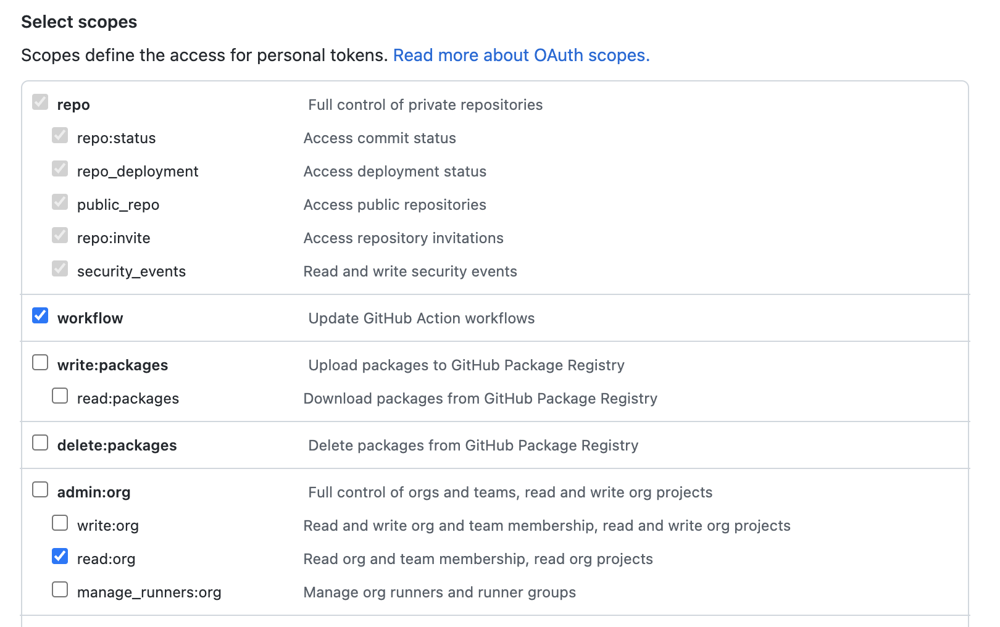
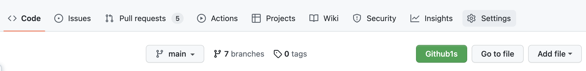
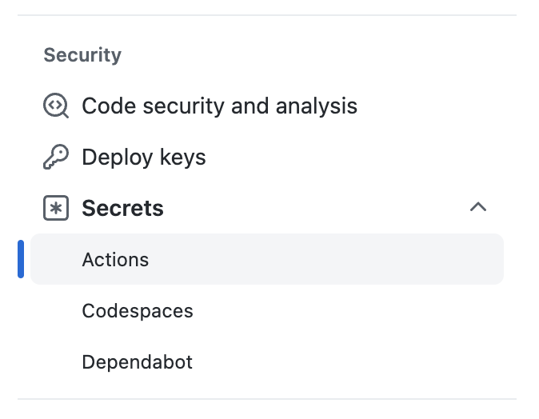
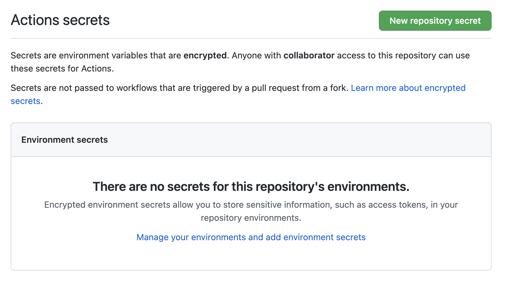
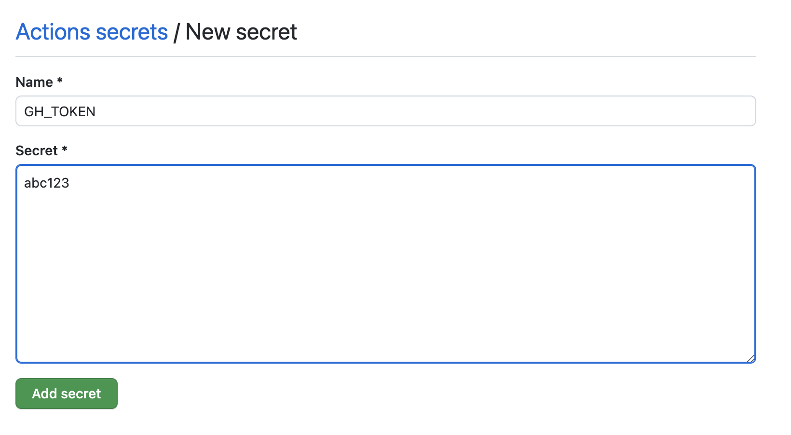

Modifying the project
Modifying the template's noxfile.py
What's a noxfile and what's nox?
nox is a command line tool for automating the building of environments and running actions. Cookiecutter dash docset uses it to install the dependencies needed to build the documentation and run the build commands.
There are 2–3 methods you will use:
-
Session.installruns pip commands in the environment created by nox. So if creating your doc-building environment requires you to run:% pip install . % pip install --requirement=docs/requirements.txtThis would translate to:
session.install(".") session.install("--requirement=docs/requirements.txt") -
Session.chdir Changes the current working directory.
-
Session.runRuns a command in the environment created by nox. If building your docs requires you to run:% cd docs % make htmlWe'll use Session.chdir to translate this to:
with session.chdir("docs"): session.run("make", "html")
A few modifications will need to be made to the template in ./noxfile.py.
First,
specify the build steps for the library's documentation
by modifying docs.
Warning
All of the functions you need to modify in noxfile.py—docs
,icon, and dash—are
set to raise NotImplimented errors
as a reminder to the user to make some changes.
This will cause nox to fail by default.
Remove them once you have completed your changes.
@nox.session(python=PYTHON, tags=["build"])
def docs(session: Session) -> None:
"""Build {{ cookiecutter.library_name }}'s docs."""
# Remove the NotImplemented error once the correct doc build steps
# have been added
raise NotImplementedError(
"Replace starter code below with correct docs build steps."
) {#- (1) #}
# Instructions are usually found in a file named CONTRIBUTING.md,
# or by copying the steps in the workflows found in
# .github/workflows/
# Check if it works by running nox --tags=build in your terminal
# This is an example doc step process that works with most libraries
# It may or may not work with the library you are targeting
with session.chdir(LIBRARY_REPOSITORY):
session.install(".") {#- (2) #}
with session.chdir(pathlib.Path(LIBRARY_REPOSITORY) / "docs"):
session.install("--requirement=requirements.txt") {#- (3) #}
session.run("make", "docs", external=True) {#- (4) #}
- This line is here to make sure you modify the code below to build the docs for your specific library. Remove it after you're done.
- Here you typically install the package locally
- Here you install the extra requirements needed to build the docs themselves—maybe sphinx, mkdocs, etc
- Finally you run the command that builds the docs
Second, specify the correct path to an icon relative to the library's repository root.
@nox.session(python=False, tags=["build"])
def icon(session: Session) -> None:
"""Create dash icon."""
for size, file_name in (("16x16", "icon.png"), ("32x32", "icon@2x.png")):
# Using convert instead of magick since only the former is
# available by default right now in ubuntu-latest
# Remove the NotImplementedError once the correct icon path has
# been added
{#- (1) #}
raise NotImplementedError("Specify the correct path to the icon")
session.run(
"convert",
# Specify the correct path in the line below
"{{ cookiecutter.library_repository_name }}/path/to/icon.png", {#- (2) #}
"-resize",
size,
"-background",
"none",
"-gravity",
"center",
"-extent",
size,
file_name,
external=True,
)
- This line is here to make sure you modify the path below to point to the icon for your library. Remove it after you're done.
- Replace this line
with a path pointing towards an image
that can be used as the icon for your documentation.
The path should start from the name of the
directory containing the repository.
When you generate the project using [cookiecutter],
{{ cookiecutter.library_repository_name }}will automatically be replaced by the repository directory name.
Third,
specify the correct path to the build documentation.
Most Python libraries will build
to library_name/doc/_build/html
or library_name/docs/_build/html,
so not much—if
anything—will
need to be changed.
But there are some exceptions.
If you're not sure where the build documentation will be located,
run:
% nox --sessions clone docs
See Running the project locally for more information on how to run this project on your machine.
@nox.session(python=PYTHON, tags=["build"])
def dash(session: Session) -> None:
"""Create dash docset."""
session.install("doc2dash", CONSTRAINTS_ARG)
# Remove the NotImplementedError once the correct path to the build
# documentation has been added
{#- (1) #}
raise NotImplementedError("Specity the correct path to the build documentation")
session.run(
"doc2dash",
"--index-page=index.html",
"--icon=icon.png",
"--online-redirect-url={{ cookiecutter.documentation_url }}",
# Replace the path below with the correct path to the
# documentation
# For python libraries, most of the time the below will work as
# is
# You may run `nox --sessions clone docs` to observe where the
# build docs end up
f"{LIBRARY_REPOSITORY}/docs/_build/html", {#- (2) #}
*session.posargs,
)
# As of 3.0.0, doc2dash does not support 2x icons
# See https://github.com/hynek/doc2dash/issues/130
docset_path = _get_docset_path()
shutil.copy("icon@2x.png", os.fsdecode(docset_path))
- The
NotImplimentedErrorline is here to make sure you modify the path below. Remove it after you're done. -
If necessary, replace this with the path to the build documentation. The placeholder value will work for most cases. If you're not sure of the path to the build documentation, run:
% nox --session clone docsSee Running the project locally for more information on kicking off the build process on your machine.
Example noxfile.py modifications
Here are some diffs to illustrate typical modifications
made to the default noxfile.py:
Add GH_TOKEN as a repository secret
How to create a GitHub token
Under your profile.
Go to Settings.

Select Developer settings

Select Tokens.

Finally, select the scoped of your token.

Cookiecutter dash docset needs a GitHub token to create commits and pull requests on our behalf. Create a GitHub token with the following scopes:
- repo
- repo:status
- repo_deployment
- public_repo
- repo:invite
- security_events
- workflow
- admin:org
- write:org
- read:org
- manage_runners:org
How to add a GitHub repository secret
On your GitHub repository,
go to the Settings

Under Secrets,
select Actions.

Create a repository secret
by clicking New repository secret.

Paste your token and name it GH_TOKEN.

Add this token as a GitHub repository secret
named GH_TOKEN.
Install additional dependencies in .github/workflows/build_docs.yml
Note
This step is only needed
if building the documentation
requires dependencies that cannot be pip installed by nox.
If there are additional non-python dependencies needed to build the docs
add the installation steps in .github/actions/build_docs.yml.
- name: Setup Nox
id: setup-nox
uses: wntrblm/nox@2022.8.7
with:
python-versions: "{{ cookiecutter.python_version }}"
{# (1) #}
- name: Build docs
id: build-docs
env:
{% raw -%}
GITHUB_TOKEN: ${{ secrets.GITHUB_TOKEN }}
{%- endraw %}
run: |
nox --tags build
-
Here we could install extra dependencies needed to build the docs. For example, if we need pandoc, we can install it via the
r-lib/actions/setup-pandoc@v2action.- name: Setup pandoc id: setup-pandoc uses: r-lib/actions/setup-pandoc@v2 with: pandoc-version: "2.17.1"
Examples of additional dependencies
When building the docset for Polars
we install Rust before we start the Build docs step.